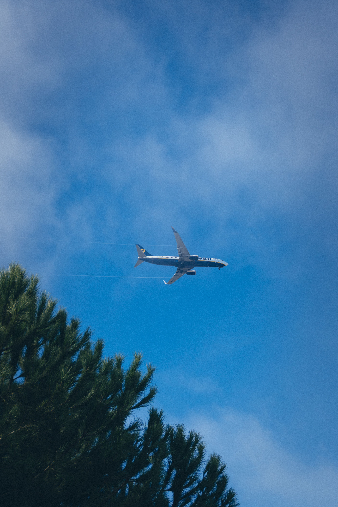
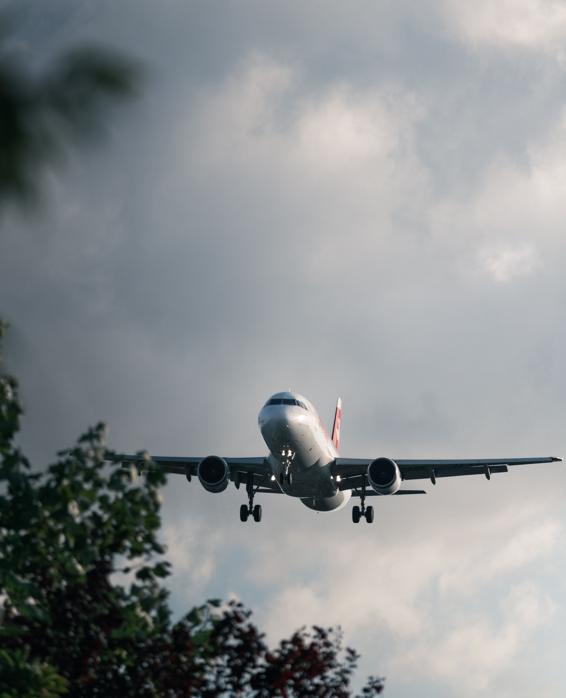
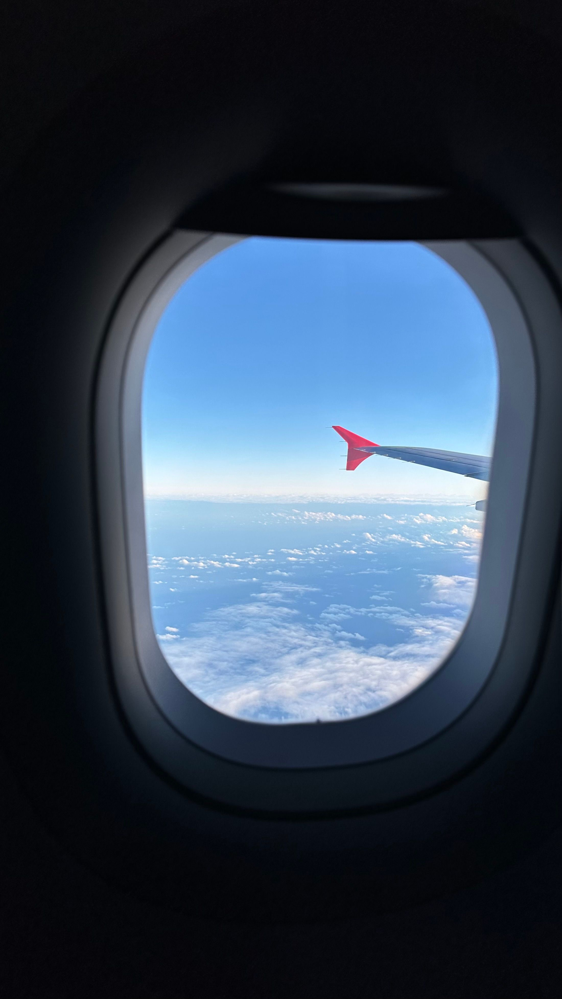

مشغّل الصوت
مقطع صوتي لصوت تحليق طائرة في السماء.
مشغّل الفيديو
فيديو يوضح تحليق طائرة بين السحب بدقة عالية.
موقعنا
جامعة الأقصى، غزة، فلسطين
معرض الصور

الصورة 1: طائرة في السماء الزرقاء.

الصورة 2: تحليق طائرة تحت الغيوم.
الصورة 3: طائرة بين السحب.

الصورة 4: إطلالة من نافذة الطائرة فوق السحاب.